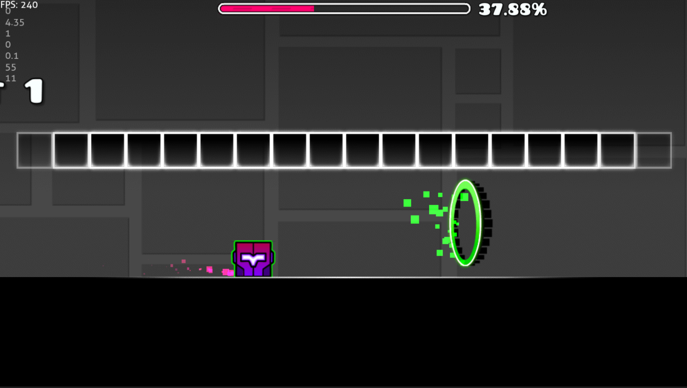

Minecraft
Minecraft Mods
I create Minecraft mods and plugins as Bowser_The_Boss on Modrinth and CurseForge. Here are some of my projects.

All Items Plugin / Mod
My All Items projects turn collecting every item in Minecraft into a challenge, with plugin and mod versions for different ways to play.
- The client mod tracks your individual progress.
- The server mod tracks a group’s collective progress.
- The plugin brings the all-items challenge to Paper and Spigot servers.

Fragments of the Final Gate
Collect different eyes throughout the world to unlock the End. This mod makes reaching the final dimension a world-spanning collection adventure.

Compact Tools
Combines all tools into one item, giving you a compact alternative to carrying separate tools.

Trigger Happy Ghast
This mod lets you shoot fireballs out of the Happy Ghast, adding a fiery twist to the friendly flying mob.
Hypixel Bedwars
I’ve played countless games of Hypixel Bedwars and earned over 700 stars.
Geometry Dash
Geode Mods
I made Better Pause, a Geode mod that adds new information to the pause menu.
Levels
I’ve created multiple rateworthy and rated levels in both classic and platformer modes.
Green Portal

I came up with the green portal, which RobTop (the developer) added to the game.
Hardest Levels
I’ve beaten multiple extreme demons. My current hardest completion is Glide.
GeoGuessr
Rank
I’m currently in the Master III division for solo duels.